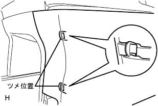

フロントシートASSY LH 取り外し |
| 1. フロントシートASSY LHオーバーホール時の注意事項 |
フロントシートASSY LHにはプリテンショナ付きシートアウタベルトが取り付けられている。
作業前にSRSエアバッグシステム·[プリテンショナ]の注意事項を読み、確実な作業を行う。(要領は参照)
| 2. フロントシートレッグ カバー NO.1取りはずし |
 |
ツメのかん合をはずし、フロントシートレッグカバーNo.1を図の矢印の方向に引き上げて取りはずす。
| 3. フロントシート レッグ サイド カバー キャップ取りはずし |
 |
保護テープを貼ったマイナス薄刃ドライバーを使用してツメのかん合をはずし、フロントシートレッグサイドカバーキャップを取りはずす。
| 4. フロントシートレッグ カバー取りはずし |
|  |
ツメのかん合をはずし、フロントシートレッグカバーを取りはずす。
| 5. フロント シートレッグ カバー LH (LH シート ヨウ)取りはずし |
 |
ツメのかん合をはずし、フロントシートレッグカバーLH(LHシート ヨウ)を取りはずす。
| 6. フロントシート レッグ カバー NO.2取りはずし |
スクリュー4本をはずす。
 |
前側のかん合をはずし、フロントシートレッグカバーNo.2を取りはずす。
| 7. フロントシートASSY LH取りはずし |
バッテリマイナスターミナルを切り離す。
シート側ワイヤハーネスのコネクタを切り離し、ボルトをはずす。
フロント側のボルト2本を取りはずす。
リヤ側のボルト2本を取りはずす。
フロントシートASSY LHを車両より取りはずす。